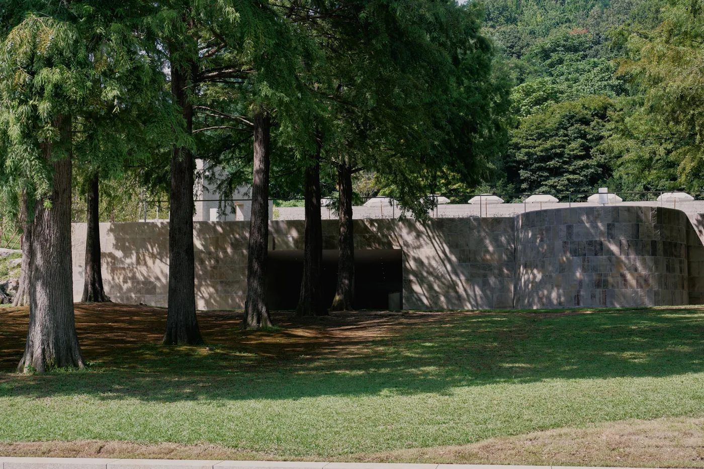

삼성의 창업자 호암 이병철 선생이 세운 호암미술관. 그 앞에 담과 문, 정자와 연못이 이어지는 전통정원 ‘희원’이 펼쳐집니다.
안내소에서 출발해 보화문을 지나 미술관 뒤 후원을 돌고, 주정의 법연지를 거쳐 호암카페에서 산책을 마칩니다. 약 30분 동안 천천히 걸어 보세요.
COURSE MAP
지도를 누르면 크게 볼 수 있습니다출발 · 안내소도착 · 호암카페
FINISH
호암카페
보화문을 다시 지나 언덕 위 호암카페에서
희원 산책을 마칩니다.
희원의 산책을 마치고, 18시까지 호암카페에서 다시 만나요.
